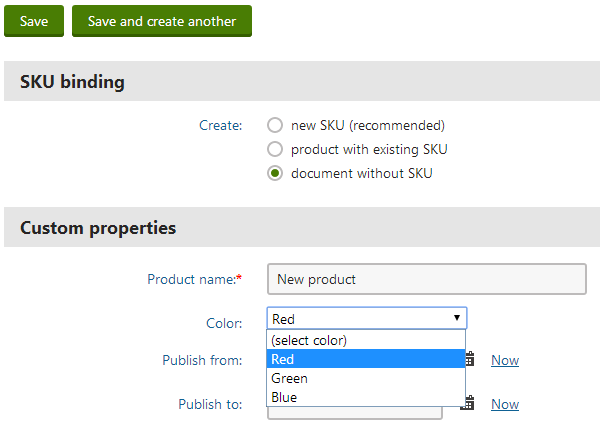

Example - Developing custom form controls
The following example demonstrates how to create a form control that allows users to choose a color from a drop-down list. You can use the same basic approach to create any type of custom form control.
Note: This example implements the custom form control as a Web user control (.ascx file) within the Kentico web project. You can alternatively create form controls by adding a control class to a separate assembly (the class must also inherit from the FormEngineUserControl base class).
Defining the code of a custom form control
Open your web project in Visual Studio (using the WebSite.sln or WebApp.sln file).
Right-click the CMSFormControls folder and choose Add -> New Item.
Create a new Web User Control and call it ColorSelector.ascx.
Add a standard DropDownList control onto the user control's form:
Set the DropDownList's ID property to drpColor.
<asp:DropDownListID="drpColor"runat="server"></asp:DropDownList>Switch to the code behind and add using statements for the following namespaces:
usingSystem;usingSystem.Web.UI.WebControls;usingCMS.FormEngine.Web.UI;usingCMS.Helpers;Make the user control class inherit from FormEngineUserControl:
publicpartialclassCMSFormControls_ColorSelector : FormEngineUserControlAdd the following members into the class:
/// <summary>/// Gets or sets the value entered into the field, a hexadecimal color code in this case./// </summary>publicoverrideobjectValue{get{returndrpColor.SelectedValue;}set{// Selects the matching value in the drop-downEnsureItems();drpColor.SelectedValue = System.Convert.ToString(value);}}/// <summary>/// Property used to access the Width parameter of the form control./// </summary>publicintSelectorWidth{get{returnValidationHelper.GetInteger(GetValue("SelectorWidth"), 0);}set{SetValue("SelectorWidth", value);}}/// <summary>/// Returns an array of values of any other fields returned by the control./// </summary>/// <returns>It returns an array where the first dimension is the field name and the second is its value.</returns>publicoverrideobject[,] GetOtherValues(){object[,] array =newobject[1, 2];array[0, 0] ="ProductColor";array[0, 1] = drpColor.SelectedItem.Text;returnarray;}/// <summary>/// Returns true if a color is selected. Otherwise, it returns false and displays an error message./// </summary>publicoverrideboolIsValid(){if((string)Value !=""){returntrue;}else{// Sets the form control validation error messagethis.ValidationError ="Please choose a color.";returnfalse;}}/// <summary>/// Sets up the internal DropDownList control./// </summary>protectedvoidEnsureItems(){// Applies the width specified through the parameter of the form control if it is validif(SelectorWidth > 0){drpColor.Width = SelectorWidth;}// Generates the options in the drop-down listif(drpColor.Items.Count == 0){drpColor.Items.Add(newListItem("(select color)",""));drpColor.Items.Add(newListItem("Red","#FF0000"));drpColor.Items.Add(newListItem("Green","#00FF00"));drpColor.Items.Add(newListItem("Blue","#0000FF"));}}/// <summary>/// Handler for the Load event of the control./// </summary>protectedvoidPage_Load(objectsender, EventArgs e){// Initializes the drop-down list optionsEnsureItems();}The above code overrides three members inherited from the FormEngineUserControl class that are most commonly used when developing form controls:
Value - it is necessary to override this property for every form control. It is used to get and set the value of the field provided by the control.
GetOtherValues() - this method is used to set values for other fields of the object in which the form control is used. It must return a two dimensional array containing the names of the fields and their assigned values. Typically used for multi‑field form controls that need to store data in multiple database columns, but only occupy a single field in the form.
IsValid() - this method is used to implement validation for the values entered into the field. It must return true or false depending on the result of the validation.
The SelectorWidth property provides a way to access the value of a parameter that will be defined for the form control later in the example. The value of the property is used in the EnsureItems() method to set the width of the internal drop-down list.
Tip: You can access the settings of the field to which the form control is assigned through the FieldInfo property of the form control (inherited from the FormEngineUserControl class). For example:
// Checks whether the field using the form control is Requiredif(this.FieldInfo.AllowEmpty)Save the both code files. Build your project if it is installed as a web application.
Registering the custom form control in the system
Sign in to the Kentico administration interface.
Open the Form controls application.
Click New form control.
Enter the following values:
Control source: Web user control
Display name: Custom color selector
Code name: Leave the (automatic) value
Type: Selector
File name: ~/CMSFormControls/ColorSelector.ascx (you can click Select to choose the file)
Click Save.
The system creates your control and the General tab of the control's editing interface opens.
Select Text and Page types in the Control scope section.
Click Save.
Switch to the Properties tab.
Click New field.
Set the following values for the form control parameter:
Field name: SelectorWidth
Data type: Integer number
Display field in the editing form: yes (checked)
Field caption: Drop-down list width
Form control: Text box
Click Save.
This parameter allows users to specify the width of the color selector directly from the administration interface whenever they assign the control to a form field. The code of the form control already ensures that the value is properly applied.
Now you can test the control by placing it into a page editing form.
Placing the form control in a page editing form
Open the Page types application.
Edit (
 ) the Product page type.
) the Product page type.Select the Fields tab to access the field editor for the page type.
Click New field.
Set the following properties for the field:
Field name: ProductColor
Data type: Text
Size: 100
Display field in the editing form: no (clear the check box)
This field stores the name of the color selected for the product. It will not be available in the editing form, the value is set automatically by the GetOtherValues() method of the ColorSelector.ascx control (notice that the Field name matches the name used in the code of the method).
Click Save.
Click New field again to add another field.
Set the following parameters for this field:
Field name: ProductHexaColor
Data type: Text
Size: 100
Display field in the editing form: yes (selected)
Field caption: Color
Form control: Custom color selector
This field stores the hexadecimal code of the selected color. In the code of the form control, the value is handled through the Value property. The field is visible in the page's editing form according to the design of the custom form control.
Set the width of the selected via the Drop-down list width option in the Editing control settings section. For example, enter 200. This is the SelectorWidth parameter that you defined for the form control.
Click Save.
Result
Open the Pages application.
Create a new page of the Product page type (for example under the /Products section of the sample Corporate site).
Select the Do not create an SKU option.
The page's editing form contains the new form control.

Selecting a value through the custom color selector form control
The interface of the Color page field uses the custom form control. The width of the displayed drop-down list matches the value that you entered into the form control's parameter (200). If you do not choose any color, the validation error message defined in the code of the form control appears.
Getting and setting values of other fields using the API
You can access the data of the current form through the Form property of the form control (inherited from the FormEngineUserControl class).
To retrieve the values entered into other fields, use the GetFieldValue method:
Form.GetFieldValue(string fieldName) – returns an object containing the value of the specified field.
For example, use the following code to get the value of the ProductName field (New product is returned if the field is empty):
string productName = CMS.Helpers.ValidationHelper.GetString(Form.GetFieldValue("ProductName"), "New product");To set the value of a field, you can use the following approach:
Form.Data.SetValue(string fieldName, object value) – sets a value for the specified field.
To modify the value of a field before the form is validated or saved, you need to place the code inside a handler of the underlying form's OnBeforeValidate or OnBeforeSave events. For example:
protected void Page_Load(object sender, EventArgs e){ // Assigns a handler method to the OnBeforeValidate event of the form where the control is used Form.OnBeforeValidate += BeforeValidateHandler;}private void BeforeValidateHandler(object sender, EventArgs e){ // Sets a value into the form's "TextFieldName" field Form.Data.SetValue("TextFieldName", "TextFieldValue");}